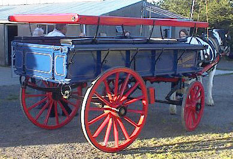

Bachaud. - Un bachaud 'tait eune tchéthette ligiéthe pouor lé vrai, qu'nou-s-appelait étout un tchéthiot à vrai. Nou-s-en viyait acouo iun ou deux du côté des Landes, St. Ouën, jusqu'auprès la preunmié dgèrre.
Bachaud. - Un bachaud 'tait eune tchéthette ligiéthe pouor lé vrai, qu'nou-s-appelait étout un tchéthiot à vrai. Nou-s-en viyait acouo iun ou deux du côté des Landes, St. Ouën, jusqu'auprès la preunmié dgèrre.
Banné. - En usage au 18e. siècl'ye, et au c'menchement du 19e., hèrnais grôssyi dgèrni d'plianches pouor lé fond et les côtes. Ch'est là l'hèrnais tch'était connu d'vant l'hèrnais à bannieaux d'à ch't heu.
Cabriole. - Espèce de cabriolet, en Fr.; en Ang. "gig". Connue jusqu'envithon 1870. Pus tard, étant un mio difféthente et ouvèrte, nou l'app'lit "eune chaise". Mais viyiz étout "Tchéthiole" et "Quèrre".
Cârrosse. - Y'avait les cârrosses à deux j'vaux (et la cârrosse à un j'va, sans doute), les cârrosses à quat' chévaux et cârrosses à hut j'vaux.
Chaise. - En Fr. tonneau; Angl. "Governess-cart". Viyiz "Cabriole".
Êclon. - Vaie à "Hèrnais".
Hèrnais. - Lé vièr hèrnais à êclon faîsait sèrvi à tchithier l'fain et l'avoût. Y'avait étout lé hèrnais à bannieaux, hèrnais à bèr, hèrnais à êpu. Nou convèrtissait aîsiement dé iun à l'autre. Et pis y'avait lé bas hèrnais, tel qué l'hèrnais à bouais, lé hèrnais à cidre et l'hèrnais à boeufs.
Quèrre. - Lé mot nouos v'nait dé l'Angl. "car", dé "jaunting-car", les deux sièges dé chutte vouaituthe étant dos à dos, iun r'gardant l'avant, l'autre en driéthe. D'întroduction contre la fîn du 20e. [?] siècl'ye, v'là tchi dispathut auprès la preunmié dgèrre. Eune chaise n'avait qu'un siège. Vaie "Cabriole".
Tchéthet, tchéthette ou tchithette, etc. - Un hèrnais à j'va bein ligi s'appelait eune tchéthette ou un tchéthet.
Tchéthibot. - Un p'tit hèrnais à bras, fait en vitesse - tel qu'un tchéthibot pouor porter les cannes à lait.
Tchéthiole ou tchithiole. - Modèle pus modèrne qué la "Cabriole" - en angl. "buggy". Chutte vouaituthe sé pèrdit finnalement entre les années 1930-1940. Et chette-là, dans la pâraisse dé St. Jean, fut probabliément la seule tchi restait. La chaise était ouvèrte, pouor lé bieau temps.
Tchéthiot ou tchithiot. - Vouaituthe d'eune sorte ou autre, tchéthiot à j'va, tchéthiot à mousse, etc. Un tchéthiot à vrai sé disait étout un bachaud, q.v.

Vainne. - Vouaituthe à quat' reues, en Angl. "farm-van". N'y'en a pus qu'deux'trais en usage dé nouos jours. Les gens du Ouêst disent "eune vainne", les cheins d'l'Êst "un vainne".
F.
Viyiz étout: